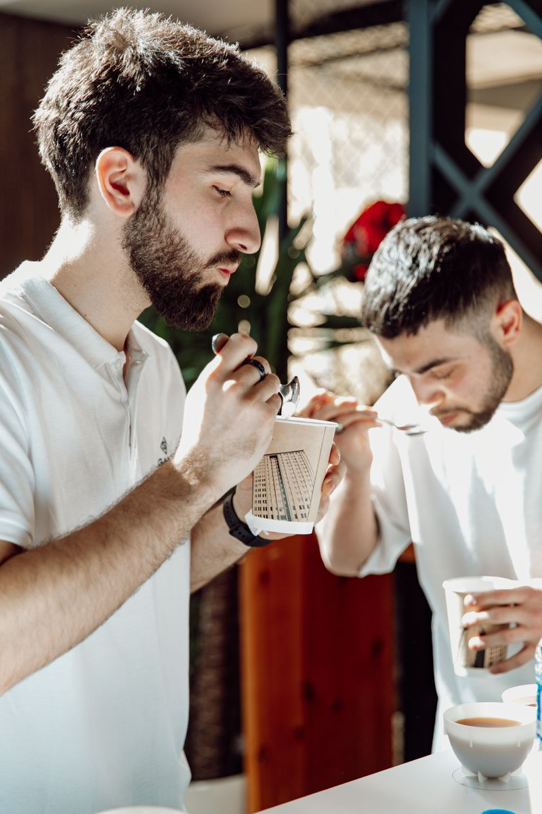
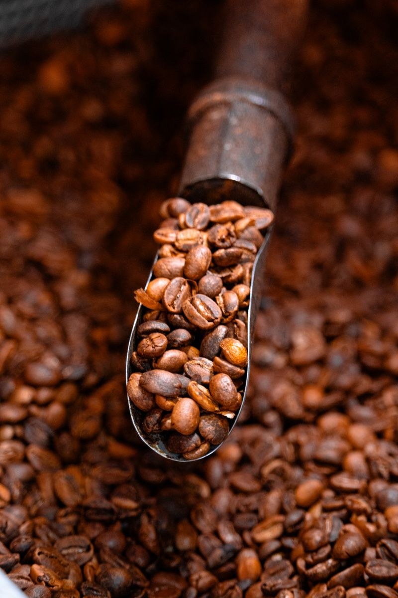

Notes from the bar
Coffee Journal
Short reads on specialty coffee — for the curious and the caffeinated alike.

What Makes Coffee "Specialty"?
A quick primer on scoring, traceability and why it matters what's in your cup.
Read More
Espresso vs Filter Coffee
Same beans, two very different cups — here's why, and how to pick between them.
Read More
How Processing Changes Flavour
Washed, natural or honey — the way a cherry is processed shapes everything downstream.
Read More
How to Choose Coffee Beans
Roast date, origin and roast level — what actually matters when picking a bag.
Read More
Beginner's Guide to Pour-Over
A simple, repeatable V60 method to get you a great cup at home.
Read More
Understanding Tasting Notes
"Jasmine" or "brown sugar" on a bag isn't marketing fluff — here's what it means.
Read More